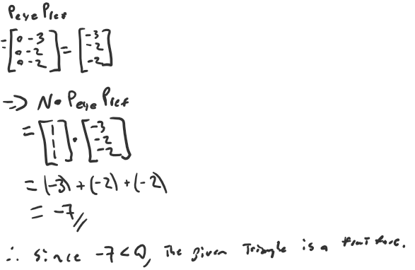
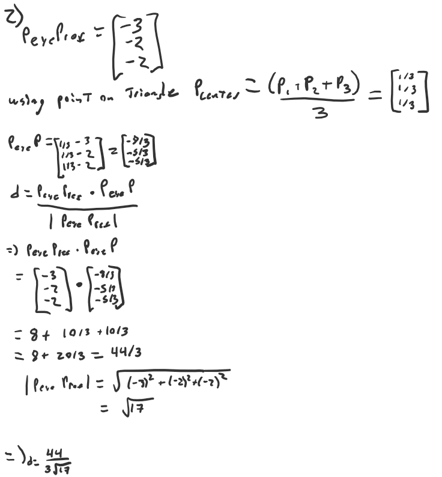
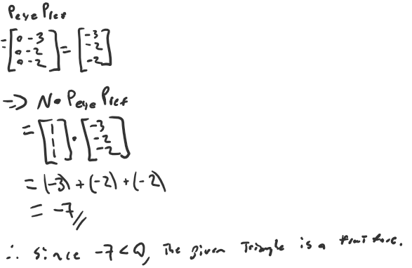
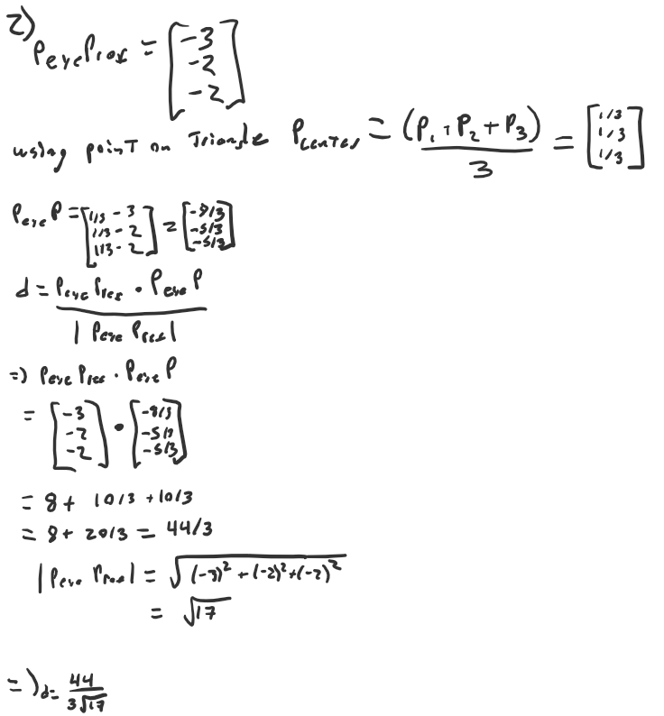
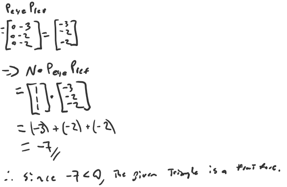
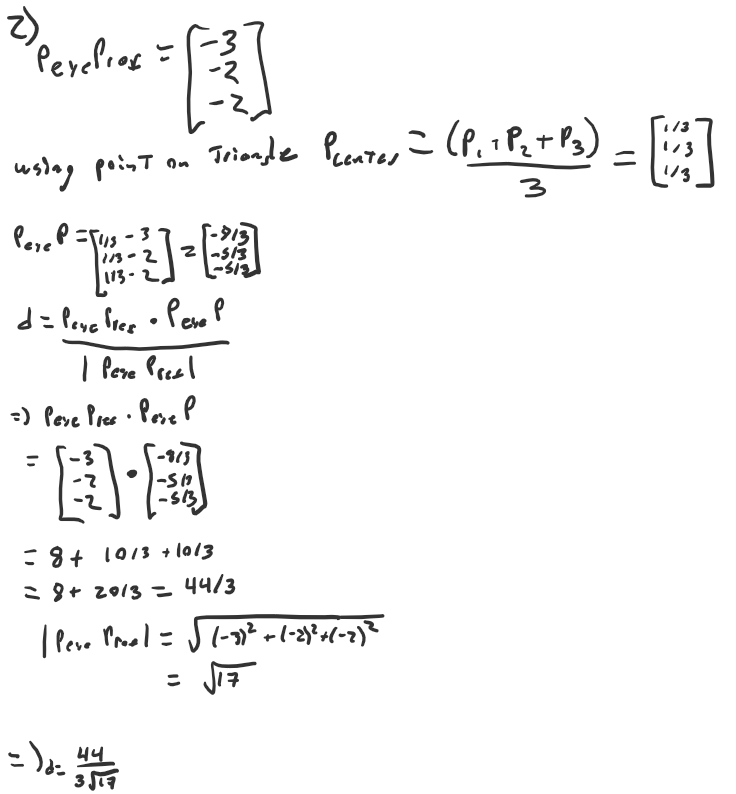

 
 Author: Thomas Ingram
Date: 2023/11/06
Check readme.txt for course work statement and self-evaluation.
A: culling removes or modifies primitives hidden in whole or part by other primitives whereas clipping removes or modifies primitives not within the viewing portion.
A: the difference between object precision and image precision lies in the level of detail/granularity the method is considering when making decisions. Object Precision methods like Painter’s Algorithm usually require mainainting a sorted list of entire objects and their depths. Whereas image precision methods like Depth/Z Buffering only deal with individual pixels and determines visibility based purely on the depth at that point.
Given:
eye position at E(3, 2, 2), and
reference (look at) point at R(0, 0, 0).  
A:A light source model represents the light source direction/position, color and intensity in a 3d scene. the three light source models are: Point where light comes form a point, Directional where light comes from a direction and, Ambient where light comes from anywhere.
A:A reflection model determines how light interacts with the surfaces of objects and how it is reflected by the surface. three reflection models are: Diffuse reflection, Specular reflection, Ambient reflection
A:A shading model defines how a pixel color is calculated based on the light reflection models three basic shading models are: Constant Shading, Gouraud Shading, Phong Shading
Given: - eye position at E(3, 2, 2), point light position at L(1, 2, 4) with light intensity 0.8, - triangle P1(1,0,0)P2(0,1,0)P3(0, 0, 1), and surface diffusion rate 0.4 for red color.
Compute the simple diffusion reflection intensity of red color at the center of the triangle. Use the simple diffusion reflection formula in slide 11 of lecture 13 (lighting).
Complete? Yes
Complete? Yes
Complete? Yes
Complete? Yes
Complete? Yes
Complete? Yes
it doesnt affect all faces perfectly
Complete? No
i implemented the spin of a single object but I couldnt implement the solar system because for some reason whenever I would add the house object to the world it would crash, I implemented sun and earth but since I couldnt use the house object I couldnt get the 3rd planet.
References